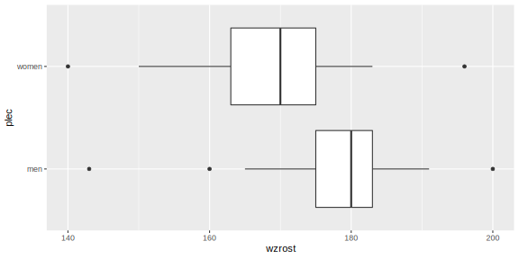
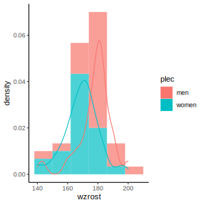

3.22 Box plot - example (1)
# Plot box plots using R
data <- data.frame(
men = c(143, 160, 165, 168, 172, 173, 175, 176, 177, 178, 179, 180, 180, 181, 181, 182, 182, 183, 183, 184, 186, 188, 190, 191, 200),
women = c(140, 150, 155, 158, 160, 163, 163, 165, 166, 166, 168, 170, 170, 171, 172, 173, 173, 173, 175, 176, 177, 181, 182, 183, 196) ) # Data set
head(data) # Displays the first lines of a dataset## men women
## 1 143 140
## 2 160 150
## 3 165 155
## 4 168 158
## 5 172 160
## 6 173 163library(dplyr)##
## Attaching package: 'dplyr'## The following objects are masked from 'package:stats':
##
## filter, lag## The following objects are masked from 'package:base':
##
## intersect, setdiff, setequal, unionlibrary(tidyr) # Load packages
data <- gather(data = data, key = "plec", value = "wzrost", men:women ) # Transform dataset from wide to long format
head(data)## plec wzrost
## 1 men 143
## 2 men 160
## 3 men 165
## 4 men 168
## 5 men 172
## 6 men 1733.22.1 Box plot - example (2)
box <- ggplot(data = data) + geom_boxplot( aes( x = plec, y = wzrost ) ) + coord_flip() # Rysuje wykres pudełkowy
print(box) # Wyświetla wykres
3.22.2 Box plot - example (compare the box plots)
True or False:
- Women in the studied sample are, on average, taller than men (F);
- Male height is more dispersed relative to the median (…);
- The lowest person is a woman (…);
- Both data sets negatively skewed (…);
- Half of the women measure at least 170 cm (…).
3.22.3 Plot the data from the above example using histograms and smooth density curves
hist <- ggplot(data = data) + geom_histogram( aes( x = wzrost, y = ..density.., fill = plec ), bins = 6, alpha = 0.7 ) + geom_density( aes( x = wzrost, y = ..density.., colour = plec ) ) + theme_classic() # Create histograms
print(hist) # Print the result